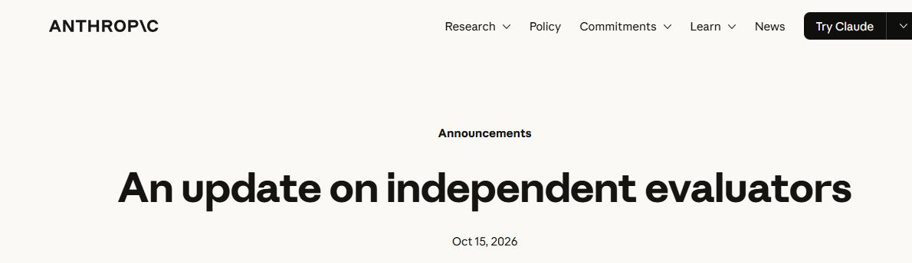

앤트로픽, 외부 평가자에게 내부 검사 문을 연다
클로드를 만든 앤트로픽이 외부 비영리 평가기관 METR의 연구자 6명에게 내부 위험 평가팀과 비슷한 접근 권한을 제공했다고 10월 15일 밝혔다. 완성된 챗봇에 질문만 던지는 검사를 넘어, 회사 안의 도구와 자료를 살피게 한 조치다. 앤트로픽 발표

AI가 시험 문제를 잘 푸는지와 위험한 행동을 잘 막는지는 서로 다른 질문이다. 공개된 채팅창에서 문제가 나타나지 않았어도 내부 시험에서 무슨 일이 있었는지까지 알기는 어렵다. 외부 평가자가 회사 안을 보는 이유는 이 빈틈을 줄이기 위해서다.
METR은 AI가 사람의 통제에서 벗어날 위험을 연구하는 비영리 단체다. 이번 협력에서 이 단체가 맡은 일은 클로드에 ‘안전 인증’ 표시를 붙이는 것이 아니다. 관찰한 위험과 회사의 대응을 분석해 공개할 근거를 모으는 일이다.
평가자는 회사의 직원이 되지 않는다
앤트로픽은 평가팀에 회사 장비와 사무 공간, 내부 도구 접근을 제공했다고 설명했다. ‘직원과 비슷한 접근’이라는 표현은 정보를 볼 수 있는 범위를 말한다. METR 연구자를 앤트로픽 직원으로 채용했다는 발표는 아니다.
공개 권한에도 중요한 변화가 있다. 앤트로픽은 METR의 위험·사건·관행 분석 발표 자체를 거부할 수 없다고 밝혔다. 다만 고객 정보, 법률 자문 비밀, 모델 설계 정보 등 미리 정한 범주의 내용은 삭제를 요구할 수 있다.
어떤 정보가 그 범주에 속하는지는 최종적으로 앤트로픽이 판단한다. METR은 받은 정보와 접근 수준에 대해 일정한 설명을 할 권리를 갖는다. 이 조건은 10월 16일 발표문에 추가 설명됐다. ‘모든 자료를 제한 없이 공개할 수 있다’고 이해하면 실제 계약보다 강한 의미가 된다.

직접 들어가 본 검사가 이미 찾아낸 것
METR은 앞서 3월에도 앤트로픽의 내부 감시·보안 장치를 시험했다. 연구자 한 명이 약 3주 동안 일부 시스템을 대상으로 약점을 찾았고, 회사는 관련 자료와 직원의 질의응답을 제공했다. METR은 새 취약점을 발견했으며 그중 일부가 수정됐다고 밝혔다. METR의 3월 시험 기록
이런 검사를 레드팀 시험이라고 부른다. 검사자가 일부러 문제가 생길 만한 상황을 만들어 방어 장치가 제대로 작동하는지 살피는 방법이다. 여기서 중요한 결과는 ‘해커처럼 행동했다’는 구경거리가 아니라, 실제로 고칠 문제를 찾아 개발팀에 전달했다는 점이다.
그 시험은 26쪽 보고서로 정리됐지만 모든 세부 내용이 공개되지는 않았다. 공개 기록에는 시험한 대상이 전체 시스템의 일부였다는 조건도 남아 있다. 기존 사례는 내부 접근의 가치를 보여주지만, 지금의 6명 팀이 같은 시험을 같은 범위로 반복한다는 뜻으로 확대할 수는 없다.
성능 평가와 안전 검사는 구분해서 읽는다
평가기관의 이름이 모델 소개에 보인다고 모든 안전 문제가 검사된 것은 아니다. METR이 9월 22일 공개한 Claude Opus 5.5 평가는 AI 연구개발을 얼마나 빠르게 만들 수 있는지에 초점을 맞췄다. 모델이 인간의 의도와 규칙을 따르는 성질 전체를 평가한 보고서가 아니라고 명시했다. Opus 5.5 평가 범위
그 보고서는 유료 의뢰 없이 작성됐지만, 앤트로픽이 요약문의 표현을 검토하고 수정할 기회를 가졌다는 점도 공개했다. 여기서 무보수, 정보 접근, 발표 독립성은 각각 따로 읽어야 한다. 돈을 받지 않았다고 정보 제한이 사라지거나 모든 보고서를 자유롭게 내보낼 수 있는 것은 아니다.
따라서 ‘외부 평가를 받았다’는 한 줄보다 평가 대상과 기간을 보는 편이 정확하다. 코딩 능력 검사인지, 내부 감시 장치의 검사인지, 위험 보고서의 논리를 검토한 것인지에 따라 독자가 얻을 수 있는 결론이 달라진다.
METR도 자발적 협력의 한계를 공개했다
METR은 이번 발표 하루 전인 10월 14일, AI 기업과 협력하는 원칙을 별도로 공개했다. 회사가 어떤 정보를 주지 않았는지, 공개 과정에서 무엇을 지웠는지, 그 제한이 결론에 영향을 줬는지를 독자가 알 수 있게 하는 것이 핵심이다. METR의 협력 원칙
이 단체는 첨단 AI 기업의 평가 대금과 기부금을 받지 않는 방식을 택했다고 설명한다. 무료 모델 사용권은 받지만 필요하면 그 비용을 스스로 감당할 수 있는 수준을 유지한다고도 밝혔다. 재정적으로 의존하지 않으려는 장치다.
그런 장치가 있어도 회사가 자발적으로 협조해야 내부 정보를 볼 수 있다는 한계는 남는다. METR은 검증하지 못한 자료에 의존하는 경우와 공개 제한이 공적 증거를 바꿀 가능성을 직접 인정했다. ‘독립’이라는 단어를 평가기관의 이름 옆에 붙이는 것만으로 끝낼 수 없는 이유다.
METR의 이해충돌 정책은 평가 대상 회사와의 고용·투자·가까운 관계 등이 결론에 영향을 줄 수 있는지를 따로 점검한다. 이해충돌은 판단하는 사람이 평가 대상과 얽힌 이익이나 관계를 가진 상황이다. 정책은 경우에 따라 해당 연구자를 평가에서 제외하거나 관계를 공개하도록 정한다. 공개 이해충돌 정책
다른 외부 검사도 같은 수준은 아니다
앤트로픽이 협력한다고 소개한 SecureBio는 생물학적 위험을 연구하는 별도 기관이다. 공개된 이전 평가에서는 회사의 보고서 외에 110쪽 자료를 받았고, 두 달 동안 70건 넘는 추가 질문과 자료 요청을 진행했다고 설명한다. 단순히 홍보용 요약문에 도장을 찍는 절차와는 다르다. SecureBio의 외부 검토 보고서
그 보고서 역시 특정 모델과 위험 범위에 한정된다. 정보가 대체로 충분했다고 보면서도 일부 위험 판단에는 의견 차이를 남겼다. 외부 검사는 회사의 모든 주장을 한꺼번에 승인하는 자리가 아니라, 근거를 더 요구하고 이견을 기록하는 과정이라는 점을 보여준다.
이번 변화는 AI의 능력 경쟁을 지켜보는 이용자에게 새로운 판단 자료를 준다. 모델이 얼마나 똑똑한지만이 아니라, 문제가 생겼을 때 누가 내부 기록을 보고 공개할 수 있는지도 볼 수 있게 됐다.
가장 의미 있는 성과는 ‘외부 평가기관이 들어왔다’는 발표 뒤에 나올 보고서에 있다. 무엇을 봤고 무엇은 보지 못했는지, 불리한 결과도 공개됐는지를 읽어야 한다. 앤트로픽이 문을 더 연 것은 진전이고, 그 문이 얼마나 열렸는지 보여주는 기록이 신뢰의 근거다.
출처와 더 읽을 자료
대표 이미지는 제품명과 기사의 핵심을 편집부가 배치한 설명용 표지이며 실제 제품 화면이 아니다. 본문의 원본 화면·영상은 각 자료 아래에 출처와 제공 주체를 표시했다. 직접 실습하지 않은 회사 시연을 편집부의 실행 결과로 표시하지 않았다.